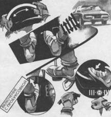

Экстренное комбинированное торможение
Самым эффективным способом экстренного замедления с максимальной скорости движения является ступенчатое комбинированное торможение. Оно включает импульсное торможение рабочим тормозом и последовательное переключение понижающих передач. Многие водители считают, что комбинированное торможение – это арифметическая сумма тормозных усилий рабочего тормоза и двигателя. Однако главным является не этот факт, а большая безопасность при замедлении.
При торможении передние колеса загружаются, а задние разгружаются. Естественно, задние колеса первые подвержены блокированию и способствуют возникновению заноса. Другими словами, тормозное усилие лимитируют задние колеса, поэтому на многих автомобилях имеются специальные устройства, ослабляющие их действие, или спереди устанавливаются дисковые тормоза, а сзади – барабанные.
Если в момент торможения на задние колеса подать крутящий момент от двигателя, то этим можно предотвратить блокирование колес (на автомобилях с классической компоновкой). Поэтому при торможении целесообразно включать понижающие передачи, так как это не усиливает, аослабляет (!) тормозной эффект ведущих колес. Тем самым этот прием можно считать антиблокировочным, позволяющим стабилизировать автомобиль при интенсивном торможении. Нужно отметить, что и для переднеприводного автомобиля комбинированное торможение очень эффективно, так как позволяет сохранить управляемость передних колес и устойчивость автомобиля.
Сложность приема комбинированного торможения связана с большим числом разнообразных действий. В управлении задействованы обе руки и обе ноги, притом каждая выполняет действия сложной координации с разными органами управления.
При выполнении комбинированного торможения необходимо соблюдать определенную последовательность.
1. Принять позу готовности (положение рук на рулевом колесе “10—2” или “9–3”), перенести стопу правой ноги с педали подачи топлива на тормозную педаль, выбрать свободный ход педали.
2. Приложить к тормозной педали серию тормозных импульсов, наращивая постепенно силу и продолжительность усилий до возникновения блокирования колес. Каждый цикл растормаживания использовать для коррекций устойчивости автомобиля с помощью резких коротких действий рулевым колесом.
3. Продолжая торможение носком стопы, развернуть ногу пяткой кнаружи и нажать пяткой или боковой стороной стопы на педаль подачи топлива. Довести частоту вращения коленчатого вала двигателя до максимальной с помощью “перегазовки”.
4. Выключить левой ногой сцепление и включить понижающую передачу быстрым движением правой руки с короткой паузой в фазе прохождения нейтральной передачи, например IV – О – пауза – III. Включить сцепление с короткой задержкой (пробуксовкой) в фазе включения.
Далее продолжается структура действий 2–3 – 4с последовательным переключением понижающих передач вплоть до II, а в исключительных случаях и до I.

Повысить результативность импульсного торможения вам поможет последовательное переключение понижающих передач. Этим способом вы создадите антиблокировочный эффект на ведущих колесах.
Чтобы сохранить устойчивость и управляемость при экстренном комбинированном торможении, используйте “перегазовки” и задержку включения сцепления при каждом включении понижающей передачи.
Дополнительные действия при торможении позволяют повысить эффективность приема и сохранить устойчивость и управляемость. Их конкретное назначение заключается в следующем:
многоимпульсное торможение позволяет прекратить блокирование колес и максимально использовать эффективность тормозной системы;
“перегазовка” пяткой необходима для выравнивания частоты вращения коленчатого вала двигателя и коробки передач. Конечная цель – создать антиблокировочный эффект ведущих колес;
пауза при включении понижающей передачи позволяет снизить частоту вращения до оптимальной, если во время “перегазовки” возник ее излишек;
задержка включения сцепления необходима для предотвращения ударных нагрузок, которые могут способствовать заносу автомобиля;
коррекция рулевым колесом способствует противодействию рысканья автомобиля при возникновении кратковременных блокирований колес и позволяет сохранить курсовую устойчивость автомобиля.
Хотя прием комбинированного торможения и является самым оптимальным для экстренного снижения скорости в критической ситуации, он практически недоступен большинству водителей. Из-за сложной технологии выполнения он требует автоматизма навыков, что возможно лишь при повседневном его применении. Вот это и невозможно для обычного водителя, так как требует повышенного расхода топлива, интенсивной эксплуатации автомобиля и т. д. Только постоянно тренирующиеся спортсмены могут достичь совершенства в эффективном использовании этого приема. Однако применение даже элементов приема (возможного включения понижающих передач) позволяет повысить качество торможения за счет использования антиблокировочного эффекта.